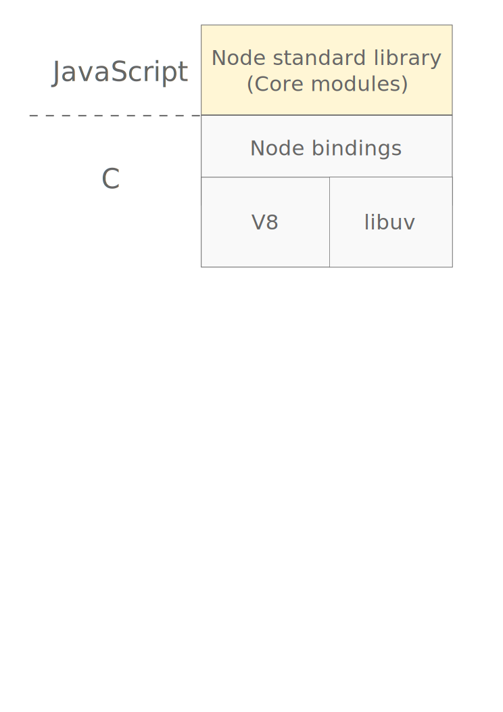
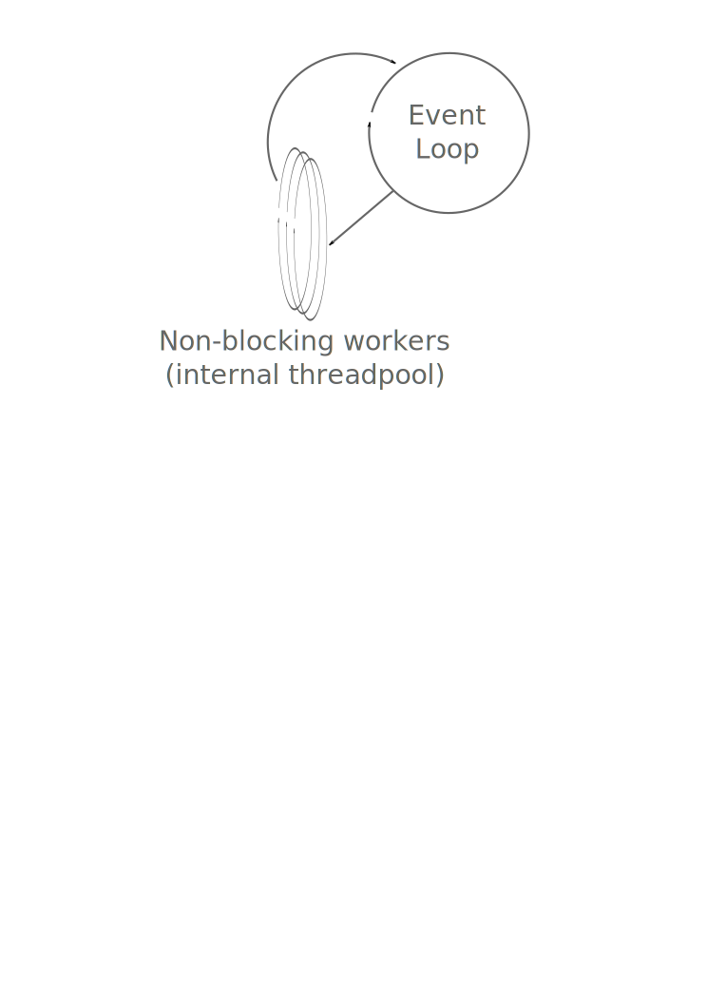

Jiří Prokop
Kerio Technologies s.r.o.
Node.js
- open-source platforma
- MIT licence
- vývoj od roku 2009
- server-side javascript
- aktuální stabilní verze 0.10.2
Komunita javascriptových vývojářů.
- GitHub (pro srovnání):
bootstrap
* 47,925 < 14,205
node
* 21,350 < 3,572
rails
* 18,030 < 5,381
- balíčkovací systém
- => ekosystém podobný Ruby
- CommonJS
- synchronní require
- module.exports
- cachování ("singleton")
- nepřeberné množství materiálů ke studiu
- tvořit se dá téměr vše:
- jednoduché webové stránky
- skripty
- command-line utility
- multiplayer online hry
- bussiness aplikace
Pod kapotou
Postaveno nad V8
- tenký C wrapper
- libuv
- platform layer
- práce s IO a systémem
- javascript core modules

Základní principy
Event-loop based!
- single-thread
- event-driven
- non-blocking
- asynchronous
Single-thread:
- podobné nginxu
- řeší problém: 1 klient / 1 thread

console.log("Start");
setTimeout(function() {
console.log("I'm back here in 100ms! Or not?");
// blocked by loop!!!
}, 100);
// 'sleep' 2 seconds in loop
var now = new Date().getTime();
while(new Date().getTime() < now + 2000) {
// do nothing
}
console.log("End");
Pozor: výpočetně/CPU náročné aplikace. Blokují!
- Řeší se:
- cluster (podobné HTML5 Workers)
- async. algoritmus
- externí procesy
module:
a thing you can require() in javascript.
package:
a thing i can install on the command line.
yes, they overlap.
Každý package obsahuje "manifest".
package.json
Interaktivní package.json
package.json
- dependencies/devDependencies
- name
- version
- author/contributors
- scripts (např. npm start)
package může být instalován:
- lokálně
- globálně
nástroje většinou globálně
npm install grunt-cli -gostatní lokálně
npm install async
Instalace dependencies z package.json
npm install
Přidání do package.json (musí být validní!)
npm install underscore --save
(zjistí verzi, nainstaluje a uloží)
Aktuální verze modulu v repozitáři
npm info component version
Hledání modulů
npm search component
(vhodnější hledat z webu)
Update modulů na novější verze
npm update
Využívá tzv. sémantické verzování
Packages se ukládají do složky node_modules.
- většina packagů je javascriptový kód
- => lze se snadno podívat, co modul dělá
- => případně hot-fixnout
Instalovaný modul se načte funkcí require:
var _ = require('underscore');
var evens = _.filter([1, 2, 3], function(num) {
return num % 2 == 0;
});
Uvnitř modulu se používají relativní cesty.
var cow = require('./violet-cow/moodul.js');
cow.moo();
TIP!
Adresář node_modules/
- přidat do .gitignore
- nekomitovat!
TIP!
Proměnná PATH
- přidat ./node_modules/.bin
Zpřístupní lokální command-line utility!
Seznam instalovaných modulů:
- lokálně
npm list - globálně
npm list -g
Nepřeberné množství packagů.
Pěkně rozdělené + základní přehled:
Node.js Wiki - Modules
I/O
Moduly pro práci s file-systémem:
- fs
- asynchronní/synchronní verze
- path
Čtení ze souboru:
var options = { encoding: 'utf-8' };
fs.readFile('fs-read.js', options, function(err, data) {
if (err) throw err;
console.log(data);
});
(pozor na buffer)
Čtení ze souboru (synchronní):
var options = { encoding: 'utf-8' };
var data = fs.readFileSync('fs-read.js', options);
console.log(data);
Modul process:
- stdin/stdout/stderr
- env
- cwd
- kill
- nextTick (vs Timers.setImmediate)
Modul child_process:
- exec/fork/spawn
- stdin/stdout/stderr
- on (message/close/exit events)
Největší změna v poslední době...
Modul stream:
- usnaďuje tvorbu vlastních streamů
- naštěstí zpětně kompatibilní
- zajímavost:
- nové API - modul do starších verzí
Modul stream:
Pomocné base classes:
- Readable
- Writable
- Duplex
- Transform
- PassThrough
readable.pipe(writable)
Události
Modul events:
class EventEmitter:
- emit
- addListener/on
- once
- removeListener/removeAllListeners
Pozor na maxListeners (default 10)!
Síť
Nativní moduly pro (server+client):
- Sockets (TCP, UDP)
- podporuje unix sockets
- TLS/SSL
- HTTP/HTTPS
Moduly, které usnadňují práci, např.:
HTTP server:
var http = require('http');
http.createServer(function (req, res) {
res.writeHead(200, {'Content-Type': 'text/plain'});
res.end('Hello World\n');
}).listen(1337, '127.0.0.1');
OT: Express.js
Pokud se nainstaluje globálně
npm install -g express
umí vytvořit kostru aplikace
express <app-name>
(ukázat strukturu aplikace)
HTTP server s Express.js:
var express = require('express');
var app = express();
app.get('/', function(req, res){
res.writeHead(200, {'Content-Type': 'text/plain'});
res.end('Hello World\n');
});
app.listen(3000);
OT: CoffeeScript
CoffeeScript - vhodný doplněk
11. místo na GitHubu
- plus
- zjednodušená syntaxe javascriptu
- mínus
- přidává další vrstvu abstrakce
- je potřeba kompilovat
- exceptions - čísla řádek nesedí
- rychlé skriptování, prototypování
- vzal si Good Parts javascriptu
- odebral vše, co bylo "zbytečné"
- vše je výraz
vypis = (text) -> console.log text
pozdravy = ['Ahoj', 'Nazdar', 'Zdar', 'Čus']
vypis "#{pozdrav} Coffee!" for pozdrav in pozdravy
objekt =
jmeno: 'Dr. Zoidberg'
obsazeni:
Futurama: [1..136]
console.log "#{objekt.jmeno}" if objekt?
console.log objekt?.neexistujiciFunkce()?.toString()
Co se jinam nevešlo
Modul domains
- bezpečnější ošetřování chyb bez ztráty kontextu
- process.on('uncaughtException') !!
Náhrada shell skriptů, pipe
#!/usr/bin/env node
Užitečné moduly
Další zdroje
Dotazy?
Co se jinam nevešlo
NPM dependence může být gitový repozitář/tar/zip.
Pozor! Některé package obsahují nativní C/C++ kód (je potřeba mít dev. prostředí)
Node.js umí běžet v experimentálním módu s ES6 (nová verze javascriptu)
node --harmony
Common simple tasks should be easy, or we aren't doing our job.
Ryan Diehl (autor Node.js)
People often say that Node is better than most other platforms at this stuff, but in my opinion, that is less of a compliment and more of an indictment of the current state of software.
Ryan Diehl (autor Node.js)
Being better than the next guy isn't enough; we have to be the best imaginable.
Ryan Diehl (autor Node.js)